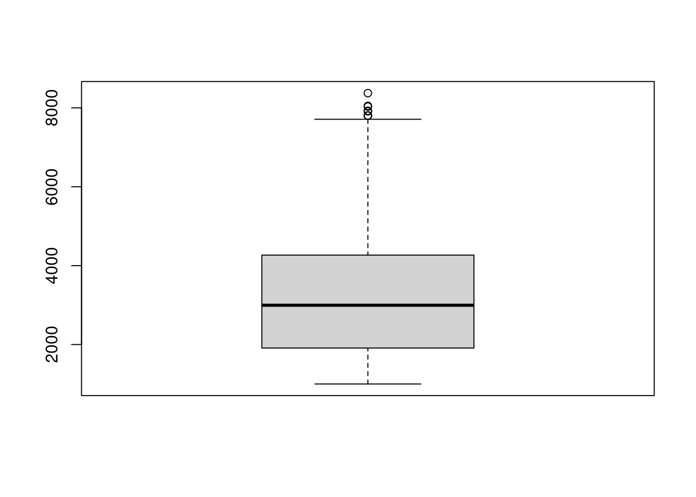
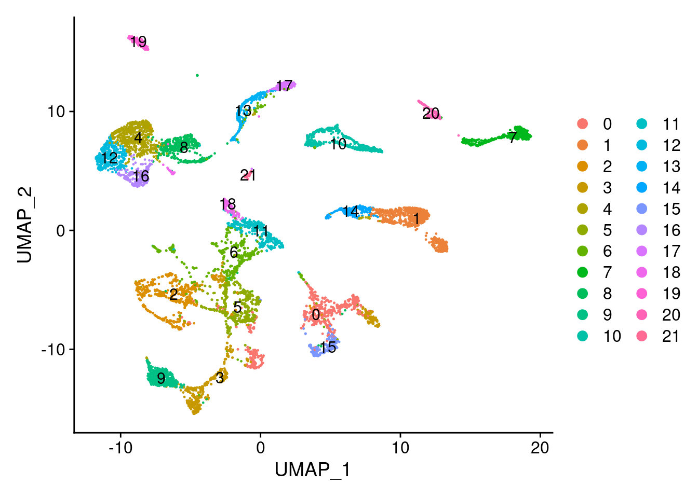
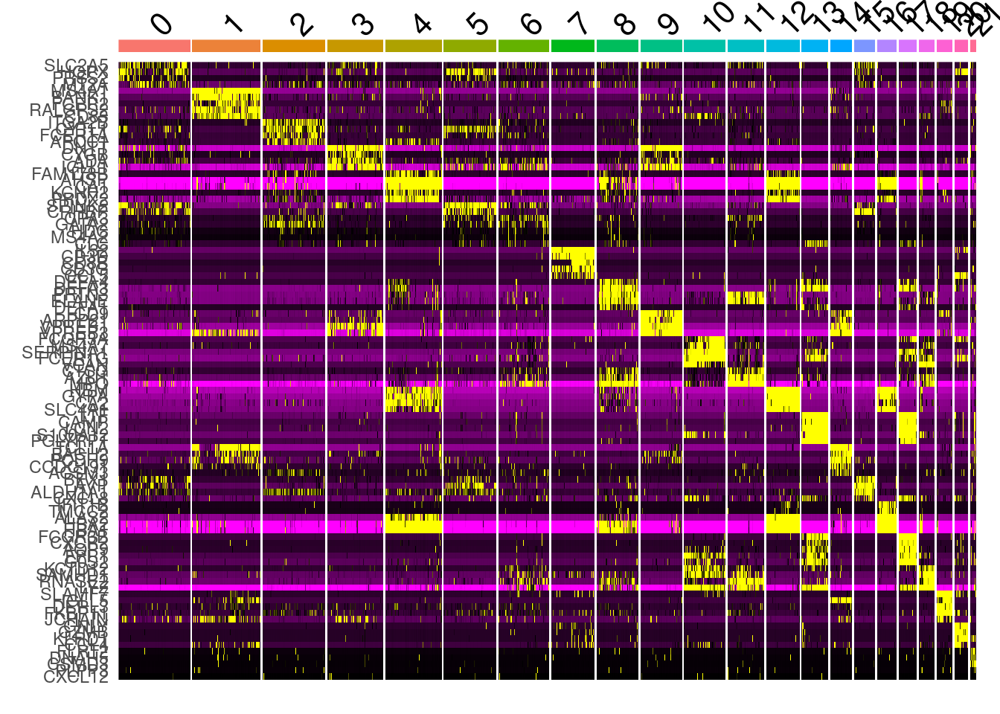
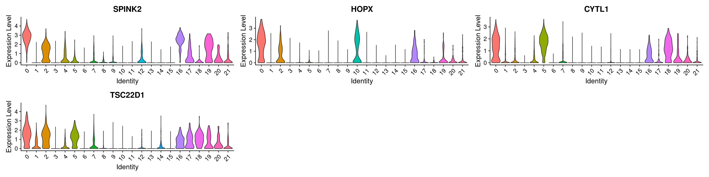
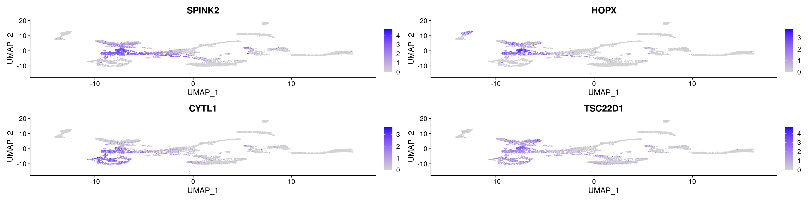

Chapter 8 Single-cell transcriptomic landscape of human blood cells
Reproducible Research of Single-cell transcriptomic landscape of human blood cells
Download data from GEO
- Single-cell Transcriptomic Landscape of Human Blood Cells
- GSM4201332 BM1
- GSM4201333 BM2
- GSM4201334 BM3
- Single-cell transcriptome landscape of adult HSPC
- GSM4793029 B cell population
- GSM4793030 NK cell population
- GSM4793031 T cell population
- GSM4793032 Monocyte population
- GSM4793033 Neutrophil population
- GSM4793034 Erythrocyte population
8.1 Read scRNA data
Data are located in ./ABC/data/GSE137864_HSPC/.
8.1.1 read HSPC data
library(Seurat)
library(ggplot2)
library(Matrix)##
## Attaching package: 'Matrix'## The following object is masked from 'package:S4Vectors':
##
## expand## The following objects are masked from 'package:tidyr':
##
## expand, pack, unpack## HSPC
dir_10x <- "./ABC/data/GSE137864_HSPC/"
# change names as Read10X needed.
dir(dir_10x)## [1] "barcodes.tsv.gz" "features.tsv.gz"
## [3] "GPL20301.soft" "GSE137864_series_matrix.txt.gz"
## [5] "matrix.mtx.gz"HSPC_raw <- Read10X(dir_10x)
HSPC_meta <- GEOquery::getGEO("GSE137864", destdir="./ABC/data/GSE137864_HSPC/")## Setting options('download.file.method.GEOquery'='auto')## Setting options('GEOquery.inmemory.gpl'=FALSE)## Found 1 file(s)## GSE137864_series_matrix.txt.gz## Using locally cached version: ./ABC/data/GSE137864_HSPC//GSE137864_series_matrix.txt.gz##
## ── Column specification ────────────────────────────────────────────────────────
## cols(
## ID_REF = col_character(),
## GSM4201332 = col_character(),
## GSM4201333 = col_character(),
## GSM4201334 = col_character()
## )## Using locally cached version of GPL20301 found here:
## ./ABC/data/GSE137864_HSPC//GPL20301.softHSPC_meta <- Biobase::pData(HSPC_meta$GSE137864_series_matrix.txt.gz)
colnames(HSPC_raw) %>% head## [1] "HSC_BM1_L1_bar1" "HSC_BM1_L1_bar2" "HSC_BM1_L1_bar3" "HSC_BM1_L1_bar5"
## [5] "HSC_BM1_L1_bar6" "HSC_BM1_L1_bar7"8.1.2 read Blood Cells data
## Blood Cells
BC_raw <- read.csv("./ABC/data/HumanBloodCells/GSE149938_umi_matrix.csv", check.names=F)
BC_mat <- Matrix( t(as.matrix(BC_raw)) )
dim(BC_raw)## [1] 7643 19813colnames(BC_mat) %>% head## [1] "BNK_spBM1_L1_bar25" "BNK_spBM1_L1_bar26" "BNK_spBM1_L1_bar27"
## [4] "BNK_spBM1_L1_bar28" "BNK_spBM1_L1_bar29" "BNK_spBM1_L1_bar30"BC_meta <- GEOquery::getGEO("GSE149938", destdir="./ABC/data/HumanBloodCells/")## Found 1 file(s)## GSE149938_series_matrix.txt.gz## Using locally cached version: ./ABC/data/HumanBloodCells//GSE149938_series_matrix.txt.gz##
## ── Column specification ────────────────────────────────────────────────────────
## cols(
## ID_REF = col_character(),
## GSM4793029 = col_character(),
## GSM4793030 = col_character(),
## GSM4793031 = col_character(),
## GSM4793032 = col_character(),
## GSM4793033 = col_character(),
## GSM4793034 = col_character()
## )## Using locally cached version of GPL20301 found here:
## ./ABC/data/HumanBloodCells//GPL20301.softBC_meta <- Biobase::pData(BC_meta$GSE149938_series_matrix.txt.gz)8.1.3 Merge two mats to CreateSeuratObject
# Merge two mats
dim(HSPC_raw)## [1] 19813 1813dim(BC_mat)## [1] 19813 7643ABC_HSPC_mat <- cbind(HSPC_raw, BC_mat)
dim(ABC_HSPC_mat)## [1] 19813 9456# distinguish protein-coding genes and lncRNAs
# gtf: ftp://ftp.ensembl.org/pub/release-84/gtf/homo_sapiens/
# add genesymols annotation
gtf_fn <- "~/data/drug_seq/rawdata/genome/Homo_sapiens.GRCh38.102.gtf"
gtf <- rtracklayer::import(gtf_fn)
gtf_df <- dplyr::filter(as.data.frame(gtf), type=="gene") %>%
dplyr::select(gene_id, gene_name, gene_biotype)
ABC_HSPC_gene <- as.data.frame(rownames(ABC_HSPC_mat))
colnames(ABC_HSPC_gene) <- "gene_name"
gene_types <- dplyr::left_join(ABC_HSPC_gene, gtf_df)## Joining, by = "gene_name"protein_coding_genes <- dplyr::filter(gene_types, gene_biotype=="protein_coding") %>% dplyr::select(gene_name) %>% unlist(use.names = FALSE) %>% unique()
# should use NNONCODE website (http://www.noncode.org/datadownload/NONCODEv6_human_hg38_lncRNA.gtf.gz)
lncRNAs <- dplyr::filter(gene_types, gene_biotype=="lncRNA") %>% dplyr::select(gene_name) %>% unlist(use.names = FALSE)
# 7551 single cells
ABC <- CreateSeuratObject(count = ABC_HSPC_mat[protein_coding_genes,], project = 'ABC', min.cells = 5, min.features = 1000 )
ABC## An object of class Seurat
## 17057 features across 9364 samples within 1 assay
## Active assay: RNA (17057 features, 0 variable features)8.1.3.1 add celltype info.

hematopoiesis

celltype


Ref: 细胞类型鉴定及单细胞数据库-2021.04.24.pdf
# cell types
cell_types <- readxl::read_xlsx("./ABC/data/blood_ceel_types.xlsx", sheet="Sheet1")
ABC_meta <- dplyr::left_join(ABC@meta.data, cell_types)## Joining, by = "orig.ident"ABC_meta$group <- factor(ABC_meta$group, levels=c("HSPC", "Bcells", "NK",
"Tcells", "Monocytes", "Neutrophils" , "Erythrocytes" ) )
ranked_celltypes <- c("HSC", "BNK", "LMPP", "MLP", "MPP", "CMP", "MEP", "GMP", "memB", "preB", "proB", "immB", "regB",
"naiB", "plasma", "CLP", "NKP", "kineNK", "toxiNK", "CD4T", "CD8T", "claM", "cMOP", "hMDP",
"interM", "nonM", "preM", "metaN", "matureN", "proN", "myeN", "ery")
ABC_meta$orig.ident <- factor(ABC_meta$orig.ident, levels=ranked_celltypes )
rownames(ABC_meta) <- rownames(ABC@meta.data)
ABC@meta.data <- ABC_meta
# HSPC_types <- unique(gsub("_.*","",colnames(HSPC_raw)))
# HSPC_types <- c("HSC", "BNK", "LMPP", "MLP", "MPP", "CMP", "MEP", "GMP" )
#
# ABC_meta[which(ABC@meta.data$orig.ident %in% HSPC_types ), "group"] <- "HSPC"
#
# PB_types <- c("memB", "regB")
#
#
# Neutrophils_types <- c("metaN", "myeN", "matureN", "proN", "myeN" )
#
# NK_cells_types <- c("CLP", "NKP", "kineNK", "toxiNK")
#
# Bcells_types <- c("preB", "proB", "immB", "regB", "naiB", "plasma")
# Tcells_types <- c("CD4T", "CD8T")
#
# Erythrocytes_types <- c("ery")
# Monocytes_types <- c("claM", "cMOP", "hMDP", "interM", "nonM", "preM")8.1.3.2 线粒体
ABC <- PercentageFeatureSet(ABC, pattern = "^MT-", col.name = "percent.mt")
# ABC[["percent.mt"]] <- PercentageFeatureSet(ABC, pattern = "^MT-")
head(ABC@meta.data)## orig.ident nCount_RNA nFeature_RNA group cellname percent.mt
## HSC_BM1_L1_bar1 HSC 153232 4697 HSPC HSC 0
## HSC_BM1_L1_bar2 HSC 61300 3807 HSPC HSC 0
## HSC_BM1_L1_bar3 HSC 61831 4034 HSPC HSC 0
## HSC_BM1_L1_bar5 HSC 30637 4156 HSPC HSC 0
## HSC_BM1_L1_bar6 HSC 37540 4439 HSPC HSC 0
## HSC_BM1_L1_bar7 HSC 30843 4367 HSPC HSC 08.2 Figure 1B
# VlnPlot(ABC, features=c('nFeature_RNA'), group.by = "group")
VlnPlot(ABC, features=c('nFeature_RNA'), group.by = "orig.ident")
8.3 Figure 1C
#boxplot all genes
boxplot(ABC@meta.data$nFeature_RNA)
8.4 Figure 1D
8.4.1 LogNormalize
## ref: https://satijalab.org/seurat/articles/sctransform_vignette.html
## SCTransform replaces NormalizeData, ScaleData, and FindVariableFeatures.
## During normalization, we can also remove confounding sources of variation,
## for example, mitochondrial mapping percentage
ABC <- SCTransform(ABC, vars.to.regress = "percent.mt", verbose = FALSE)
# ABC <- NormalizeData(object=ABC,
# normalization.method= 'LogNormalize',
# scale.factor=10000 )8.4.2 筛选高变基因
# ABC <- FindVariableFeatures(ABC,
# selection.method = "vst",
# nfeatures = 2000)
# head(VariableFeatures(ABC))
#
# ABC <- ScaleData(ABC)8.4.3 筛选高变基因 and PCA降维
# hvg <- VariableFeatures(object = ABC)
# ABC <- RunPCA(ABC, features = hvg )
ABC <- RunPCA(ABC )## PC_ 1
## Positive: S100A9, S100A8, LYZ, MNDA, FCN1, S100A12, SERPINA1, TYROBP, LTF, S100A11
## CTSS, COTL1, FGR, FCER1G, IFITM2, C5AR1, CSF3R, CYBB, CYP4F3, G0S2
## NAMPT, SRGN, FPR1, MMP9, LCN2, FCGR3B, MYO1F, PLBD1, NCF2, CAMP
## Negative: HBB, HBA2, HBA1, AHSP, CA1, HBD, HBM, BLVRB, GYPA, ALAS2
## PRDX2, GYPB, SLC4A1, CA2, HEMGN, HMBS, RHAG, SELENBP1, RPS27, MGST3
## DNTT, IGLL1, VPREB3, MYL4, SNCA, UROD, SLC25A39, EIF1AY, VPREB1, TFRC
## PC_ 2
## Positive: HBA1, HBB, HBA2, AHSP, CA1, HBD, HBM, GYPA, BLVRB, ALAS2
## SLC4A1, GYPB, CA2, SLC25A37, PRDX2, HMBS, HEMGN, S100A9, S100A8, RHAG
## CD36, SELENBP1, MGST3, DEFA3, LYZ, LGALS3, S100A6, MYL4, MNDA, SNCA
## Negative: CD79B, CD79A, VPREB3, CD52, MS4A1, DNTT, TCL1A, CD74, CD69, HLA-DRA
## IGLL1, VPREB1, RPS27, CXCR4, MZB1, PAX5, SOX4, TMSB4X, B2M, BIRC3
## TMSB10, BANK1, CD9, SPIB, NEIL1, HLA-DRB1, ARPP21, PCDH9, HLA-DRB5, JUN
## PC_ 3
## Positive: TCL1A, MS4A1, CD79B, CD79A, VPREB3, PAX5, CD69, HBA2, SPIB, HBB
## HBA1, BANK1, CD52, CA1, AHSP, FCRL1, RALGPS2, PCDH9, CXCR4, NEIL1
## HLA-DRA, BIRC3, CD74, HBD, IKZF3, HBM, CD24, CD83, AFF3, CD22
## Negative: MPO, ELANE, SPINK2, PRTN3, AZU1, SRGN, RNASE2, NKG7, IL32, AIF1
## AVP, CST7, HOPX, LYZ, PRSS57, ANXA1, MT2A, CTSW, CRHBP, CLEC11A
## LGALS1, CALR, SMIM24, CCL5, CD3D, HCST, CTSG, CYTL1, EREG, TSC22D1
## PC_ 4
## Positive: LTF, LCN2, PGLYRP1, CYP4F3, CAMP, S100P, CD24, MMP9, CRISP3, DEFA3
## S100A12, DNTT, MMP8, ANXA3, BPI, ALOX5AP, PADI4, IGLL1, CEACAM8, VPREB1
## S100A8, CD177, FCGR3B, ITGAM, RETN, GCA, ARG1, CHI3L1, VPREB3, MMP25
## Negative: PSAP, CTSS, SERPINA1, FGL2, CST3, FCGR3A, MS4A7, COTL1, MPEG1, VCAN
## TYROBP, MAFB, FCER1G, SAMHD1, SAT1, KLF4, FOS, FOSB, TMEM176B, S100A10
## TNFRSF1B, POU2F2, TGFBI, NFKBIZ, CD52, ZFP36, CD300E, LST1, AHNAK, CD14
## PC_ 5
## Positive: IL32, CCL5, NKG7, CD3D, GZMA, PRF1, GZMH, GNLY, CD52, GZMB
## CD3G, FGFBP2, CST7, KLRD1, CD2, CD3E, CTSW, LCK, CD8B, B2M
## CD8A, SYNE2, CD247, MS4A1, HCST, IFITM1, DUSP2, CCL4, PYHIN1, IFITM2
## Negative: DNTT, IGLL1, VPREB1, VPREB3, CD79B, MPO, ARPP21, CD9, LYZ, SOX4
## AKAP12, VCAN, MZB1, STMN1, RNASE2, PRTN3, PTPRE, LCN6, ELANE, MME
## CST3, AZU1, FCN1, PSAP, NEIL1, SERPINA1, FOS, FOSB, KLF4, CMTM8ElbowPlot(ABC)
8.4.4 聚类分簇
ABC <- FindNeighbors(ABC, reduction = "pca", dims = 1:15)## Computing nearest neighbor graph## Computing SNNABC <- FindClusters(ABC, resolution = 0.5)## Modularity Optimizer version 1.3.0 by Ludo Waltman and Nees Jan van Eck
##
## Number of nodes: 9364
## Number of edges: 287258
##
## Running Louvain algorithm...
## Maximum modularity in 10 random starts: 0.9396
## Number of communities: 22
## Elapsed time: 0 secondshead(ABC@meta.data)## orig.ident nCount_RNA nFeature_RNA group cellname percent.mt
## HSC_BM1_L1_bar1 HSC 153232 4697 HSPC HSC 0
## HSC_BM1_L1_bar2 HSC 61300 3807 HSPC HSC 0
## HSC_BM1_L1_bar3 HSC 61831 4034 HSPC HSC 0
## HSC_BM1_L1_bar5 HSC 30637 4156 HSPC HSC 0
## HSC_BM1_L1_bar6 HSC 37540 4439 HSPC HSC 0
## HSC_BM1_L1_bar7 HSC 30843 4367 HSPC HSC 0
## nCount_SCT nFeature_SCT SCT_snn_res.0.5 seurat_clusters
## HSC_BM1_L1_bar1 37956 3769 6 6
## HSC_BM1_L1_bar2 38263 3790 6 6
## HSC_BM1_L1_bar3 38005 4027 5 5
## HSC_BM1_L1_bar5 37563 4156 2 2
## HSC_BM1_L1_bar6 37705 4439 2 2
## HSC_BM1_L1_bar7 37553 4367 6 6levels(ABC)## [1] "0" "1" "2" "3" "4" "5" "6" "7" "8" "9" "10" "11" "12" "13" "14"
## [16] "15" "16" "17" "18" "19" "20" "21"8.4.5 单细胞聚类可视化
ABC <- RunUMAP(ABC,
reduction = "pca",
dims = 1:30,
verbose=TRUE )## 23:44:22 UMAP embedding parameters a = 0.9922 b = 1.112## 23:44:22 Read 9364 rows and found 30 numeric columns## 23:44:22 Using Annoy for neighbor search, n_neighbors = 30## 23:44:22 Building Annoy index with metric = cosine, n_trees = 50## 0% 10 20 30 40 50 60 70 80 90 100%## [----|----|----|----|----|----|----|----|----|----|## **************************************************|
## 23:44:24 Writing NN index file to temp file /tmp/RtmpxBTcqh/file7e9e29fc3d1c
## 23:44:24 Searching Annoy index using 4 threads, search_k = 3000
## 23:44:24 Annoy recall = 100%
## 23:44:26 Commencing smooth kNN distance calibration using 4 threads
## 23:44:29 Initializing from normalized Laplacian + noise
## 23:44:30 Commencing optimization for 500 epochs, with 360614 positive edges
## 23:44:40 Optimization finishedDimPlot(ABC, reduction = "umap", label=TRUE)
8.5 Figure 1E
8.5.1 细胞簇差异基因分析
all_markers <- FindAllMarkers(ABC,
only.pos = TRUE,
min.pct= 0.1,
logfc.threshold= 0.25)
head(all_markers)## p_val avg_log2FC pct.1 pct.2 p_val_adj cluster gene
## AVP 0.000000e+00 1.2878495 0.809 0.196 0.000000e+00 0 AVP
## ABCB1 5.930955e-279 1.4981573 0.631 0.136 1.011643e-274 0 ABCB1
## ROS1 6.380195e-273 0.6759969 0.389 0.046 1.088270e-268 0 ROS1
## RPL31 1.800806e-266 0.9301858 1.000 0.999 3.071634e-262 0 RPL31
## CRHBP 7.394411e-266 1.7369954 0.704 0.177 1.261265e-261 0 CRHBP
## RPS24 4.585922e-262 1.0209993 1.000 0.996 7.822207e-258 0 RPS24library(dplyr)
top_markers <- all_markers %>% group_by( cluster) %>% top_n( n = 5, wt= avg_log2FC )
top_markers## # A tibble: 110 x 7
## # Groups: cluster [22]
## p_val avg_log2FC pct.1 pct.2 p_val_adj cluster gene
## <dbl> <dbl> <dbl> <dbl> <dbl> <fct> <chr>
## 1 1.77e-237 2.24 0.741 0.247 3.01e-233 0 SLC2A5
## 2 1.37e-236 2.30 0.776 0.297 2.34e-232 0 HOXA9
## 3 9.82e-235 2.35 0.768 0.275 1.68e-230 0 HOPX
## 4 3.44e-191 3.77 0.367 0.065 5.87e-187 0 PRSS2
## 5 4.84e-107 2.27 0.904 0.667 8.26e-103 0 MT2A
## 6 0 5.76 0.999 0.073 0 1 MS4A1
## 7 0 4.30 0.939 0.138 0 1 BANK1
## 8 0 4.04 0.692 0.029 0 1 FCER2
## 9 0 3.86 0.926 0.273 0 1 RALGPS2
## 10 0 3.76 0.94 0.23 0 1 CD83
## # … with 100 more rowsDoHeatmap(ABC, features = top_markers$gene) + NoLegend()
saveRDS(ABC, file="./ABC/ABC.RDS")8.5.2 marker基因展示
# marker_genes = c("AVP", "CCR7", "CD79E", "GATA1", "GZMH", "SPI1")
## cluster 0
marker_genes <- top_markers$gene[1:4]
VlnPlot(ABC, features =marker_genes, pt.size= 0)
FeaturePlot(ABC, features = marker_genes )
8.6 sessionInfo
sessionInfo()## R version 4.0.4 (2021-02-15)
## Platform: x86_64-pc-linux-gnu (64-bit)
## Running under: Ubuntu 20.10
##
## Matrix products: default
## BLAS: /usr/lib/x86_64-linux-gnu/blas/libblas.so.3.9.0
## LAPACK: /usr/lib/x86_64-linux-gnu/lapack/liblapack.so.3.9.0
##
## locale:
## [1] LC_CTYPE=en_US.UTF-8 LC_NUMERIC=C
## [3] LC_TIME=en_GB.UTF-8 LC_COLLATE=en_US.UTF-8
## [5] LC_MONETARY=en_GB.UTF-8 LC_MESSAGES=en_US.UTF-8
## [7] LC_PAPER=en_GB.UTF-8 LC_NAME=C
## [9] LC_ADDRESS=C LC_TELEPHONE=C
## [11] LC_MEASUREMENT=en_GB.UTF-8 LC_IDENTIFICATION=C
##
## attached base packages:
## [1] grid parallel stats4 stats graphics grDevices utils
## [8] datasets methods base
##
## other attached packages:
## [1] Matrix_1.3-2 doParallel_1.0.16 iterators_1.0.13
## [4] foreach_1.5.1 ggalluvial_0.12.3 NMF_0.23.0
## [7] cluster_2.1.2 rngtools_1.5 pkgmaker_0.32.2
## [10] registry_0.5-1 CellChat_1.0.0 igraph_1.2.6
## [13] pheatmap_1.0.12 GSVA_1.38.2 enrichplot_1.10.2
## [16] GSEABase_1.52.1 annotate_1.68.0 XML_3.99-0.6
## [19] Rgraphviz_2.34.0 topGO_2.42.0 SparseM_1.81
## [22] GO.db_3.12.1 graph_1.68.0 org.Hs.eg.db_3.12.0
## [25] AnnotationDbi_1.52.0 IRanges_2.24.1 S4Vectors_0.28.1
## [28] Biobase_2.50.0 BiocGenerics_0.36.1 clusterProfiler_3.18.1
## [31] forcats_0.5.1 stringr_1.4.0 dplyr_1.0.5
## [34] purrr_0.3.4 readr_1.4.0 tidyr_1.1.3
## [37] tibble_3.1.1 ggplot2_3.3.3 tidyverse_1.3.1
## [40] pbmc3k.SeuratData_3.1.4 SeuratData_0.2.1 SeuratObject_4.0.0
## [43] Seurat_4.0.1
##
## loaded via a namespace (and not attached):
## [1] rappdirs_0.3.3 rtracklayer_1.50.0
## [3] scattermore_0.7 KEGG.db_3.2.4
## [5] coda_0.19-4 bit64_4.0.5
## [7] knitr_1.32 irlba_2.3.3
## [9] DelayedArray_0.16.3 data.table_1.14.0
## [11] rpart_4.1-15 GEOquery_2.58.0
## [13] RCurl_1.98-1.3 generics_0.1.0
## [15] cowplot_1.1.1 RSQLite_2.2.5
## [17] shadowtext_0.0.7 RANN_2.6.1
## [19] future_1.21.0 bit_4.0.4
## [21] spatstat.data_2.1-0 xml2_1.3.2
## [23] lubridate_1.7.10 httpuv_1.5.5
## [25] SummarizedExperiment_1.20.0 assertthat_0.2.1
## [27] viridis_0.6.0 xfun_0.22
## [29] hms_1.0.0 jquerylib_0.1.3
## [31] evaluate_0.14 promises_1.2.0.1
## [33] fansi_0.4.2 dbplyr_2.1.1
## [35] readxl_1.3.1 DBI_1.1.1
## [37] htmlwidgets_1.5.3 spatstat.geom_2.1-0
## [39] ellipsis_0.3.1 RSpectra_0.16-0
## [41] ggnewscale_0.4.5 backports_1.2.1
## [43] bookdown_0.21 gridBase_0.4-7
## [45] deldir_0.2-10 MatrixGenerics_1.2.1
## [47] vctrs_0.3.7 Cairo_1.5-12.2
## [49] ROCR_1.0-11 abind_1.4-5
## [51] cachem_1.0.4 withr_2.4.2
## [53] ggforce_0.3.3 sctransform_0.3.2
## [55] GenomicAlignments_1.26.0 sna_2.6
## [57] goftest_1.2-2 svglite_2.0.0
## [59] DOSE_3.16.0 lazyeval_0.2.2
## [61] crayon_1.4.1 hdf5r_1.3.3
## [63] pkgconfig_2.0.3 labeling_0.4.2
## [65] tweenr_1.0.2 GenomeInfoDb_1.26.7
## [67] nlme_3.1-152 rlang_0.4.10
## [69] globals_0.14.0 lifecycle_1.0.0
## [71] miniUI_0.1.1.1 downloader_0.4
## [73] modelr_0.1.8 cellranger_1.1.0
## [75] polyclip_1.10-0 matrixStats_0.58.0
## [77] lmtest_0.9-38 zoo_1.8-9
## [79] reprex_2.0.0 GlobalOptions_0.1.2
## [81] ggridges_0.5.3 rjson_0.2.20
## [83] png_0.1-7 viridisLite_0.4.0
## [85] bitops_1.0-6 KernSmooth_2.23-18
## [87] Biostrings_2.58.0 blob_1.2.1
## [89] shape_1.4.5 qvalue_2.22.0
## [91] parallelly_1.24.0 scales_1.1.1
## [93] memoise_2.0.0 magrittr_2.0.1
## [95] plyr_1.8.6 ica_1.0-2
## [97] zlibbioc_1.36.0 compiler_4.0.4
## [99] scatterpie_0.1.5 RColorBrewer_1.1-2
## [101] clue_0.3-59 fitdistrplus_1.1-3
## [103] Rsamtools_2.6.0 cli_2.4.0
## [105] XVector_0.30.0 listenv_0.8.0
## [107] patchwork_1.1.1 pbapply_1.4-3
## [109] MASS_7.3-53.1 mgcv_1.8-35
## [111] tidyselect_1.1.0 stringi_1.5.3
## [113] gg.gap_1.3 highr_0.9
## [115] yaml_2.2.1 GOSemSim_2.16.1
## [117] ggrepel_0.9.1 sass_0.3.1
## [119] fastmatch_1.1-0 tools_4.0.4
## [121] future.apply_1.7.0 circlize_0.4.12
## [123] rstudioapi_0.13 gridExtra_2.3
## [125] farver_2.1.0 Rtsne_0.15
## [127] ggraph_2.0.5 digest_0.6.27
## [129] rvcheck_0.1.8 BiocManager_1.30.12
## [131] FNN_1.1.3 shiny_1.6.0
## [133] Rcpp_1.0.6 GenomicRanges_1.42.0
## [135] broom_0.7.6 later_1.1.0.1
## [137] RcppAnnoy_0.0.18 httr_1.4.2
## [139] ComplexHeatmap_2.6.2 colorspace_2.0-0
## [141] rvest_1.0.0 fs_1.5.0
## [143] tensor_1.5 reticulate_1.18
## [145] splines_4.0.4 uwot_0.1.10
## [147] spatstat.utils_2.1-0 graphlayouts_0.7.1
## [149] systemfonts_1.0.1 plotly_4.9.3
## [151] xtable_1.8-4 jsonlite_1.7.2
## [153] rle_0.9.2 tidygraph_1.2.0
## [155] R6_2.5.0 pillar_1.6.0
## [157] htmltools_0.5.1.1 mime_0.10
## [159] glue_1.4.2 fastmap_1.1.0
## [161] BiocParallel_1.24.1 codetools_0.2-18
## [163] fgsea_1.16.0 utf8_1.2.1
## [165] lattice_0.20-41 bslib_0.2.4
## [167] spatstat.sparse_2.0-0 network_1.16.1
## [169] curl_4.3 leiden_0.3.7
## [171] survival_3.2-10 limma_3.46.0
## [173] statnet.common_4.4.1 rmarkdown_2.7
## [175] munsell_0.5.0 GetoptLong_1.0.5
## [177] DO.db_2.9 GenomeInfoDbData_1.2.4
## [179] haven_2.4.0 reshape2_1.4.4
## [181] gtable_0.3.0 spatstat.core_2.1-2